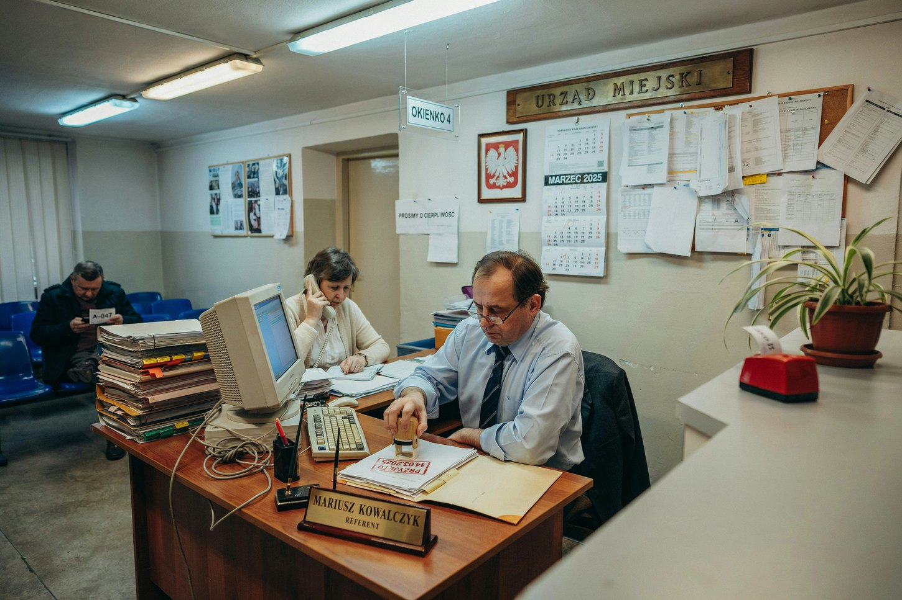
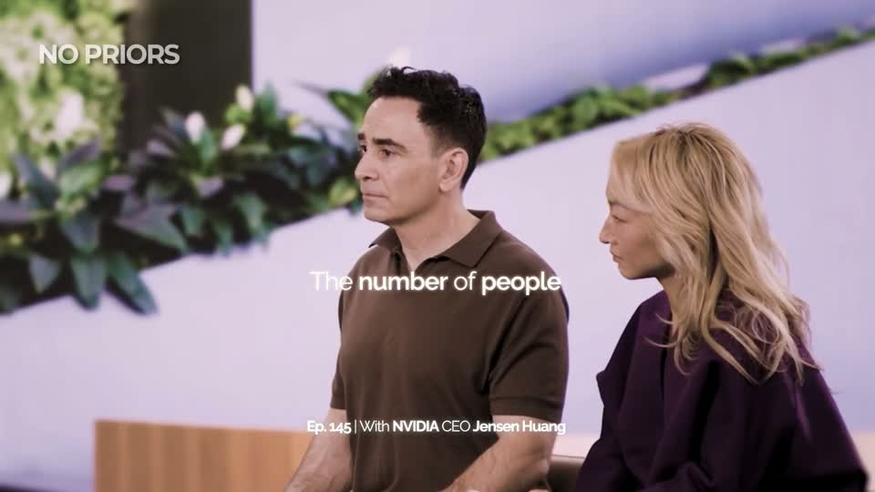
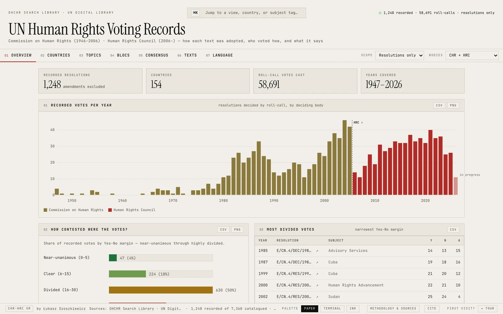

1 · w granicy
Kontrola formalna odwołania: termin, opłata, pełnomocnictwo — GPT-4.1: 96–100% trafności · 101 spraw KIO
1 · poza granicą
Napisanie wyroku na egzaminie do KIO — 37/100 przy progu 50 · modele z 2025 r.
Jak AI zmienia naszą pracę?
Wersja na telefon: treść slajdów i źródła.
Zanim ruszymy · legenda mapy
„Prawnik” = każdy z Was: prawo i administracja.
Mapa powstała w oparciu o badania i moje doświadczenia.
Badania dotyczą starszych modeli — traktujcie je jako minimum.
Liczby się zestarzeją. Patrzcie na kierunek.
Mapa · postrzępiona granica
Możliwości AI są nierówne: świetne w jednym zadaniu, zaskakująco słabe w sąsiednim, które wygląda na równie trudne. Badacze nazwali to postrzępioną granicą.
1 · w granicy
Kontrola formalna odwołania: termin, opłata, pełnomocnictwo — GPT-4.1: 96–100% trafności · 101 spraw KIO
1 · poza granicą
Napisanie wyroku na egzaminie do KIO — 37/100 przy progu 50 · modele z 2025 r.
2 · w granicy
Wykrycie zmyślonej sygnatury, z dostępem do bazy — 93,5–100% wykrytych
2 · poza granicą
Wykrycie wyroku, który istnieje, ale mówi co innego — 46–83% wykrytych
3 · w granicy
Streszczenie dokumentu, który AI dostała — 77,2% wymaganych elementów · VLAIR 2025
3 · poza granicą
Przywołanie orzeczeń z pamięci, bez sprawdzenia — NSA, I OSK 590/26: części sygnatur nie ma
Dell'Acqua i in. (2026) · Vals AI, VLAIR (2025) · Karp i in. (2026) · Liu i in. (2026), preprint · NSA, I OSK 590/26
Sąd · od herezji do praktyki
„Oto propozycja, którą — jak podejrzewam — wielu odruchowo potępi jako herezję […]. Ci, którzy — tak jak ja — uważają, że »zwykłe znaczenie« jest podstawową regułą interpretacji tekstów prawnych, powinni rozważyć — podkreślam: rozważyć — czy i w jaki sposób modele językowe oparte na sztucznej inteligencji, takie jak ChatGPT […], mogłyby — mogłyby — znaleźć zastosowanie w analizie interpretacyjnej. Tak oto pomyślałem to, co nie do pomyślenia, i powiedziałem to, czego nie należy mówić.”USA, 2024 · sędzia Kevin Newsom, federalny sąd apelacyjny, zdanie zbieżne · tłum. własne, skrócone
“Here’s the proposal, which I suspect many will reflexively condemn as heresy, but which I promise to unpack if given the chance: Those, like me, who believe that ‘ordinary meaning’ is the foundational rule for the evaluation of legal texts should consider—consider—whether and how AI-powered large language models like OpenAI’s ChatGPT, Google’s Gemini, and Anthropic’s Claude might—might—inform the interpretive analysis. There, having thought the unthinkable, I’ve said the unsayable.”
Pakistan · 2024–2025
1559 sędziów w eksperymencie — ok. połowa sędziów pierwszej instancji w kraju
+6,3%
więcej rozstrzygniętych spraw, gdy sędziowie dostali AI z dopasowanym szkoleniem
Także: Shenzhen, 2024 — sądowy model pisze uzasadnienie według rozstrzygnięcia sędziego, a sędzia je poprawia · Los Angeles, 2026 — pilotaż AI do streszczeń i projektów rozstrzygnięć
Polska · 2026
Asystent urzędnika ma w najbliższych tygodniach trafić do Prokuratorii Generalnej RP
PLLuM
polski model: wyszukiwanie i analiza prawa, streszczenia, anonimizacja; do końca roku także samorządy, m.in. Poznań
Snell v. United Specialty (11th Cir. 2024) · CEPR DP21783 (2026) · Raport ONZ A/80/169 (2025) · Rzeczpospolita, 29.09.2026 · Bell i Legg (2026)
Gildia prawników · jak AI widzi prawnika i urzędnika



Gildia prawników · czas pracy, badanie brytyjskie
W kontakcie z klientem, administracji kancelarii i czytaniu dokumentów też się pisze (maile, oferty); badanie tego nie rozbija.
2017: „bardzo trudno zautomatyzować” — Remus i Levy o pisaniu prawniczym.
Czy prawnicy będą zbędni, czy ich praca się zmieni?
„robię” → „projektuję, jak praca się wykonuje”
LETR (2013), tab. 2.6 · Remus i Levy (2017) · FT, ranking Innovative Lawyers (2026) · Mollick (2026)
Gildia prawników · mniej czasu na zadania, więcej na cel

1. Co jest odpowiednikiem „pisania kodu” w pracy prawnika albo urzędnika?
2. A co jest celem tej pracy?
No Priors, 8.01.2026
Kuźnia · jedna osoba, cały warsztat
Kiedyś: informatyk i prawnik. Dziś: pierwsza wersja w jeden wieczór.




Nie tylko ja: Repsol (Hiszpania) — FT 2026: Most innovative in-house legal team in Europe. Ok. 200 osób w dziale prawnym, każda ma 100 godzin rocznie na naukę programowania i AI.
Rezolucja RPCz 47/23 · HRC Voting · Dell'Acqua i in., Cybernetic Teammate (2025) · FT, Innovative Lawyers (2026)
Pracownia alchemika · jak powstaje eliksir
DECYZJA — co jest problemem? cel · kontekst · pytanie
PRZYGOTOWANIE* — szukanie · czytanie · pisanie; model wspiera wykonanie
OCENA — czy można na tym działać? weryfikacja · skutki uboczne
decyzjaprzygotowanieocena
* Część badaczy przestrzega: pisanie to też myślenie — decyzja powstaje w trakcie pisania (Bell i Legg 2026).
Po kolorze nie poznasz. Pełnomocnik powołał w zażaleniu trzy postanowienia NSA. Sygnatury były prawdziwe, ale „…żadne nie odzwierciedla realnego stanowiska Naczelnego Sądu Administracyjnego” (NSA, I FZ 104/26).
Nie tylko u nas. Baza Charlotina: ponad 2000 takich spraw na świecie, z Polski dwie.
NSA, I FZ 104/26 · Bell i Legg (2026) · Charlotin (2026)
Pracownia alchemika · rzecznicy patentowi · eksperyment 2026
133 rzeczników patentowych z USA, 3 miesiące z asystentem AI lub bez niego, na koniec test bez AI.
Pisanie z AI
Lepsze zgłoszenia. Największy zysk u juniorów.
Na koniec, bez AI: ocena projektu
Seniorzy z grupy AI lepsi od seniorów bez AI. Juniorzy średnio bez zysku.
Na studiach — bez skrótów. W pracy — z AI.Tylko ćwicząc sami, nauczycie się, na co zwracać uwagę, co sprawdzać i co można oddać narzędziu.
Autor i in., NBER WP 35720 (2026)
Port
Zabieracie wszystko, co zdobyliście po drodze.
Będziemy Wam pomagać przygotować się na nowe wyzwania.
Powodzenia.
Transparentnie
Z AI i pod pełną kontrolą autora. Koncepcja, tezy, kierunek i każda decyzja o treści i wyglądzie: Łukasz Szoszkiewicz. Źródła: 19 z 30 pozycji w bibliografii wskazał autor — wprost (13) albo jako trop, który AI rozwinęła (6); 11 AI znalazła na jego prośbę. Linki w ukrytych miejscach na mapie niemal wszystkie podał autor. AI pisała kod, sprawdzała liczby i cytaty w tekstach źródeł, generowała mapy i obrazy. Tylko w Claude Code: 12 dni (20.09–1.10.2026), ok. 200 poleceń, ok. 22 godziny pracy w sesji, ok. 2 450 wywołań narzędzi, ok. 3,4 mln tokenów napisanych przez model. Do tego Codex (mapy, grafiki), ChatGPT (research), Gemini i Ideogram (obrazy prawnika i urzędnika). To nie był jeden prompt.
Po wykładzie
Ilustracje map i bohaterów (Wiedźmin, Odyseja): wygenerowane w Codexie (OpenAI) na potrzeby wykładu, 25–27.09.2026. Obrazy „prawnik w pracy”: OpenAI (Codex) i Google Gemini, 23.09.2026. Obrazy „prawnik w starożytnej Grecji” (Odyseja): OpenAI (ChatGPT) i Google Gemini, 29.09.2026. Zdjęcie ze stoiska w Genewie (VII 2026): Domenico Zipoli. Muzyka: L. Göransson, „The Odyssey” (2026) — fragment „The Trial of the Bow / Vengeance” na końcu; motyw główny gra tylko na sali.